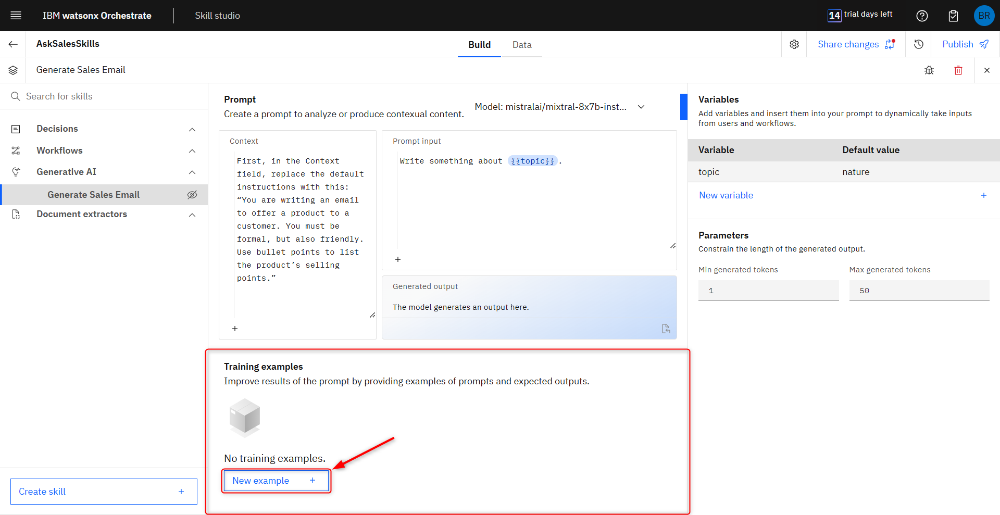
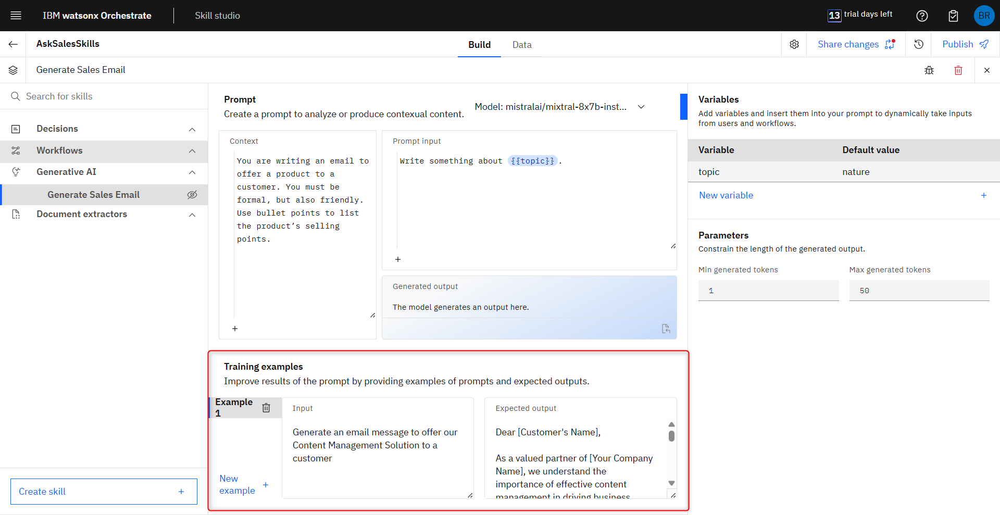
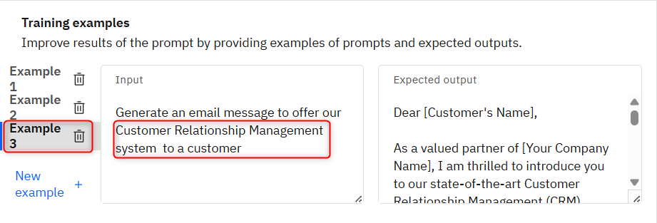
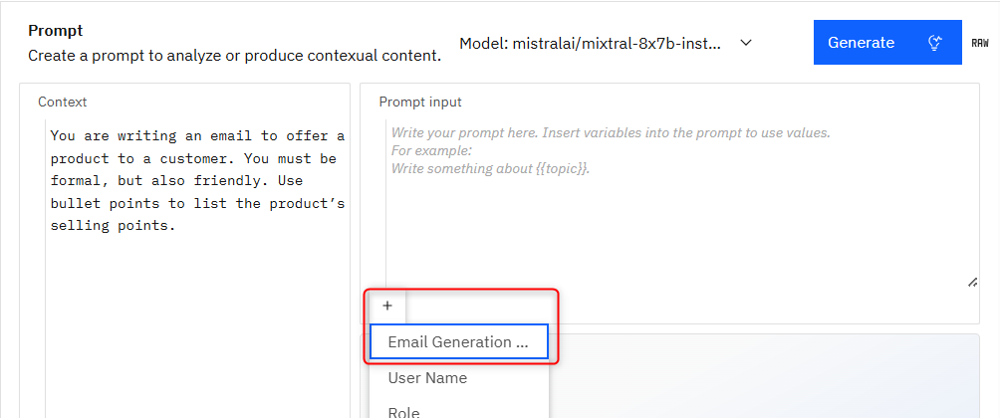
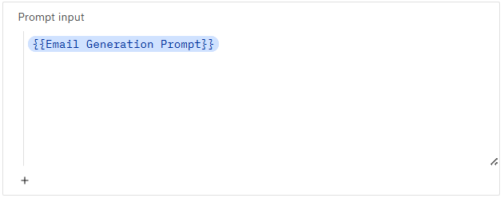
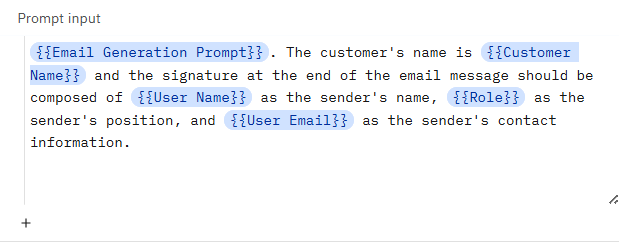

Create GenAI Skill for email body generation
In this part of the workshop, we will create a GenAI skill specialized in generating emails to offer products to customers. This will be part of your AskSales assistant as a Skill based action
1. Start the Skill studio
From the wxO home page, click Skill studio
2. Create a new Skill Project.
In the Skill Studio section, click on Create (1) to the top right, and then in Project (2).

On the New Project pop up, insert the name of your project, such as AskSalesSkills (3), then click create (4).

3. Get started with the skill type.
Inside of the project, choose the Skill type Generative AI.
Name your GenAI skill as "Generate Sales Email", then click Create.

4. Training the GenAI step-by-step on prompt lab.
In this, you will need the Email Examples document to use the email samples as training samples for the GenAI on your skill. First, in the Context field, replace the default instructions with this: “You are writing an email to offer a product to a customer. You must be formal, but also friendly. Use bullet points to list the product’s selling points.”

Then, on the Model (1) field, you can experiment with different Large Language Models to see what results you get later on, but for now, pick the mistralai/mixtral-8x7b-instruct-v01 (2).

At the bottom of the prompt lab, you can find the Training examples field. This is where you’ll use the email examples from the file you downloaded earlier. This will enhance the GenAI’s performance and accuracy when generating the email messages for your AskSales Assistant. To get started, click on New example + to add a new training sample.

On the Email Examples document, you will ind 3 email samples. Each email sample refers to a different software product, with several selling points listed for each of them. These output samples make the Generative AI capable of identifying what product it should reference in the email message and what selling points to mention. This enhances the generated email messages with significant context about a company’s products. This could be further enhanced with more samples, such as variations of selling points and message structure for each product, or even more products.
5. Adding examples.
On the Email Examples document, you will ind 3 email samples. Each email sample refers to a different software product, with several selling points listed for each of them. These output samples make the Generative AI capable of identifying what product it should reference in the email message and what selling points to mention. This enhances the generated email messages with significant context about a company’s products. This could be further enhanced with more samples, such as variations of selling points and message structure for each product, or even more products.
For the first example, use this input: “Generate an email message to offer our Content Management Solution to a customer”, and copy the Email 1 from the Email Examples file and paste it in the Expected output field of the first example.

Repeat the same steps to add the Example 2 and 3. On the Example 2 use Automation Platform and in the Example 3 Customer Relationship Management system.


6. Generating content.
With all the training examples ready, the next step is to set up the Variables and the Parameters.
In GenAI skills, variables can be created and mapped to the Prompt input. This way, you can create customized prompts and insert the variables at specific points in the prompt to ask the user for specific inputs to compose the prompt. For this lab, we will simulate wxO capturing information from a logged-in user (in this case, a sales specialist that is the persona of the demo scenario) by leveraging several variables with hardcoded values.
Let's start by adding the next Variables and leave all the Default value blank (1): - Email Generation Prompt; - User Name; - Role; - User Email; - Customer Name.
For the Parameters, Set Min generated tokens to 100 and Max generated tokens to 600 (2). This defines how much content the AI generates when prompted.
At the center of the prompt lab, you can find the Prompt input. This is the actual prompt that gets sent to the AI for content generation. This prompt is not displayed to the user when they trigger the GenAI skill, only the variables you created for the skill.
To test the generative AI, type one of the example prompts from earlier in the Prompt input (1) field and click Generate (2) to see the content generated by the GenAI. You can also try using different prompts to see the variations you can get from the training you provided to the AI.
The output should be similar to this:

7. Mapping the Prompt input.
First, delete the Prompt input and then, press on "+" to select Email Generation Prompt.

You should see this in your Prompt Input:

To enhance the email generated by the GenAI, we will use a customized, pre-made prompt. The idea here is to have the user provide the beginning of the prompt, indicating how they want the email to be generated, and then have the rest of the prompt provide more details, such as how to compose the email signature. We don’t want the user to see all the variables we created for this GenAI skill, so we’ll use a custom form in a skill flow to do this later on in this lab.
Keep in mind that this is one of the main advantages of having the Prompt input from the prompt lab not be displayed to the user. This way, you can create customized, pre-made prompts and just ask the user for specific inputs to compose the entire prompt to the GenAI.
Use this prompt in your Prompt input:
"{{Email Generation Prompt}}. The customer's name is {{Customer Name}} and the signature at the end of the email message should be composed of {{User Name}} as the sender's name, {{Role}} as the sender's position, and {{User Email}} as the sender's contact information."

Now, to test our Prompt, let's add some Default values for each variable (1): - Email Generation Prompt: Write an email to offer our content management solution at 35% discount - User Name: John Seller - Role: Sales Specialist - User Email: john.seller@ibm.com - Customer Name: Jane Customer
And click Generate (2) to test the result with that values. Your results may vary, but you’ll notice the GenAI used the values from the variables to compose the email (3).

Now, delete the values you inserted for each variable, leaving them empty. You finished creating your GenAI skill.